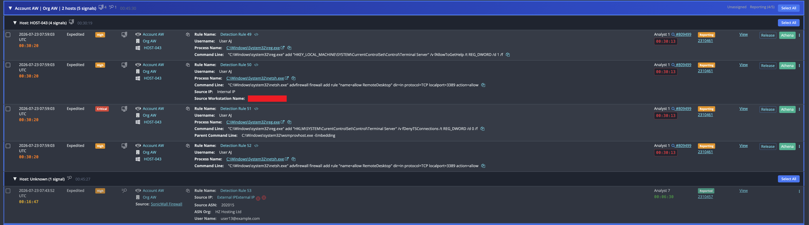
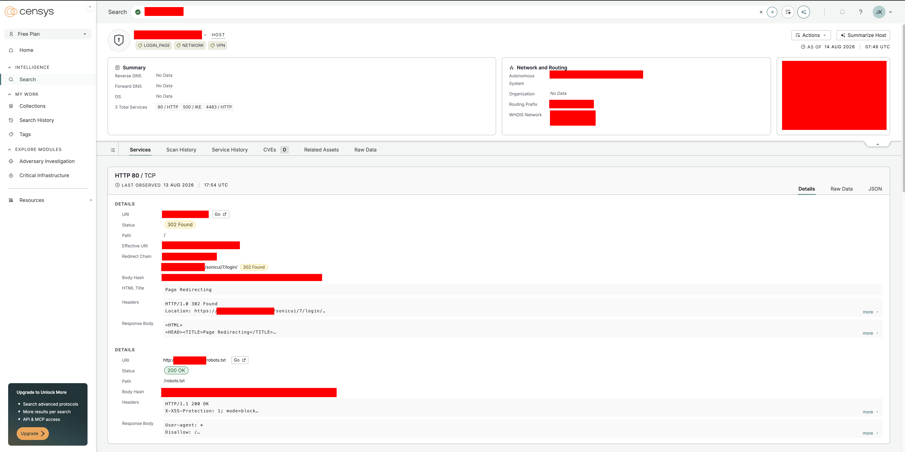

A domain controller, a SonicWall, and no malware at all
Background
On the morning of 2026-07-23, at 07:59:03 UTC, four signals landed on one host at a small law firm. The commands in them were reg.exe and netsh.exe. Both are Windows components that ship with the operating system, both were running from their real paths in System32, and both were signed by Microsoft. The host they ran on was the organisation's only domain controller.
There was no malware in this case. Across the two days of available telemetry I reviewed, nothing was written to disk and every binary that executed was a signed Microsoft one that ships with Windows. The actor worked entirely with a stolen password and whatever was already installed on the server. That makes the case worth writing up, because it is the version of an intrusion that a file-centric security stack never sees.
What follows is those two days in the order they happened, reconstructed from Windows event logs and endpoint process telemetry. The persistence is the part worth reading for. The actor skipped implants and scheduled tasks entirely and built their way back in out of a service account and a group membership in the firm's own SonicWall SSL-VPN configuration. Sitting right next to it in the same log is a finding that looks like total domain compromise and turns out to be the environment's own automation, and one field in the event record is what tells them apart.
Key takeaways
- An actor operated hands-on-keyboard on a domain controller for roughly twenty hours across two days, using only valid credentials and built-in Windows tooling.
- Persistence was built out of the organisation's own remote-access stack. The actor created a domain account for the firewall to bind to LDAP with, then added seven real employees to the
SSLVPN Usersgroup, which turned the corporate VPN into their front door. - A domain DPAPI backup key was read off the domain controller two minutes before the backdoor account was created, in the same logon session. That single read makes every saved credential in the domain recoverable offline, indefinitely.
- The events that look worst in the log, an account jumping into Domain Admins, Enterprise Admins and Schema Admins, were written by the domain controller's own machine account and reversed four hours later. That was a just-in-time access tool doing its job.
- Running Chainsaw over the domain controller's twelve event logs, with its built-in rules and the Sigma ruleset, produced 5,557 rule matches. Thirty-two of them were the actor. The tradecraft was ordinary and the correlation was the hard part.
The first signal
Four signals on the domain controller, one on the firewall, five in total across two hosts. The command lines were visible in the console before I had pulled a single log.

wsmprovhost.exe -EmbeddingTwo of those rows carry the fields I worked from.
Signal 3 of 4 severity : Critical
time : 2026-07-23 07:59:03 UTC
host : [DC01]
username : [DOMAIN]\[User 1]
process name : C:\Windows\System32\reg.exe
command line : "C:\Windows\system32\reg.exe" add
"HKLM\SYSTEM\CurentControlSet\Control\Terminal Server"
/v fDenyTSConnections /t REG_DWORD /d 0 /f
parent command line : C:\Windows\system32\wsmprovhost.exe -Embedding
Signal 2 of 4 severity : High
time : 2026-07-23 07:59:03 UTC
host : [DC01]
username : [DOMAIN]\[User 1]
process name : C:\Windows\System32\netsh.exe
command line : "C:\Windows\system32\netsh.exe" advfirewall firewall add rule
"name=allow RemoteDesktop" dir=in protocol=TCP
localport=3389 action=allow
source IP : Internal IP
source workstation name : DESKTOP-[REDACTED]
The parent process is the first thing I look at, and this one answered the question on its own. wsmprovhost.exe is the process Windows starts to host an incoming Windows Remote Management session. When an administrator runs Enter-PSSession or Invoke-Command against a server, the commands they type execute as children of wsmprovhost.exe on the far end. Nothing else on a normal Windows system parents processes that way.
Pulling the full chain out of the endpoint telemetry made the shape of the session obvious.
services.exe
└─ svchost.exe -k DcomLaunch -p
└─ wsmprovhost.exe -Embedding ← WinRM session host
├─ reg.exe ...\Terminal Server /v fAllowToGetHelp /t REG_DWORD /d 1 /f
│ └─ conhost.exe 0xffffffff -ForceV1
├─ reg.exe ...\Terminal Server /v fDenyTSConnections /t REG_DWORD /d 0 /f
│ └─ conhost.exe 0xffffffff -ForceV1
├─ reg.exe ...\CurentControlSet\... ← misspelled, creates a junk key
│ └─ conhost.exe 0xffffffff -ForceV1
├─ reg.exe ...\Terminal Server\WinStations\RDP-Tcp
│ └─ conhost.exe 0xffffffff -ForceV1
├─ netsh.exe firewall set service remoteadmin enable
│ └─ conhost.exe 0xffffffff -ForceV1
├─ netsh.exe firewall set service remotedesktop enable
│ └─ conhost.exe 0xffffffff -ForceV1
├─ netsh.exe advfirewall set allprofiles state off
│ └─ conhost.exe 0xffffffff -ForceV1
├─ netsh.exe firewall set opmode disable
│ └─ conhost.exe 0xffffffff -ForceV1
└─ netsh.exe advfirewall firewall add rule "name=allow RemoteDesktop" ... 3389
└─ conhost.exe 0xffffffff -ForceV1
user : [DOMAIN]\[User 1] host : [DC01] (10.1.10.22)
Every one of those nine commands spawns its own conhost.exe, which is Windows allocating a console window for a console program. Over WinRM nobody ever sees those windows, because there is no desktop attached to the session. They get created and torn down invisibly, nine times in seventy-two seconds, and they are a reliable side effect to hunt for when someone is driving a server remotely through cmd-style tooling.
So the person typing was not sitting at the domain controller's console, and they had not opened a Remote Desktop session. They were driving the machine over WinRM from somewhere else on the network, which is a management protocol, enabled by default on domain controllers, running over HTTP on port 5985. It generates no file on disk and it looks identical whether the person holding the credential is an administrator or a stranger.
The other field that mattered was the source workstation name. That is the only place in this entire case where the machine on the other end of the connection names itself, and Huntress recognised it immediately. It is a hostname we have seen across a series of unrelated intrusions at unrelated organisations, which is the signature of an attacker VM image that gets cloned and redeployed rather than rebuilt. The operator keeps the same box, so the same auto-generated hostname keeps turning up in victim logs. Plenty of other repeat operators do the same thing. It is redacted throughout this post, and the reason it is worth mentioning at all is the behaviour rather than the string.
Worth hunting for. Windows names itself when nobody names it during setup. Clients come out of the box as DESKTOP- or LAPTOP- plus seven random characters, servers as WIN- plus eleven, and all three turn up as actor hosts across the cases we see. A managed estate rarely keeps them, because machines you build get named by your build process. So a workstation name in Event ID 4624 that carries one of those prefixes and matches nothing in your asset inventory is a cheap, high-yield hunt.
Expect some benign hits and treat them as a second finding. This firm's own domain controller appears in its logs under a WIN- default until it was renamed in December 2024, and any machine that has been imaged but not yet renamed will look the same. A default hostname that belongs to you is an asset-management gap. A default hostname that does not is an intruder.
What those commands actually did
The full sequence ran in seventy-two seconds. Here it is verbatim.
2026-07-23 07:51:15 wsmprovhost.exe C:\Windows\system32\wsmprovhost.exe -Embedding
2026-07-23 07:52:15 reg.exe "C:\Windows\system32\reg.exe" add "HKEY_LOCAL_MACHINE\SYSTEM\CurrentControlSet\Control\Terminal Server" /v fAllowToGetHelp /t REG_DWORD /d 1 /f
2026-07-23 07:52:16 reg.exe "C:\Windows\system32\reg.exe" add "HKEY_LOCAL_MACHINE\SYSTEM\CurrentControlSet\Control\Terminal Server" /v fDenyTSConnections /t REG_DWORD /d 0 /f
2026-07-23 07:52:18 reg.exe "C:\Windows\system32\reg.exe" add "HKLM\SYSTEM\CurentControlSet\Control\Terminal Server" /v fDenyTSConnections /t REG_DWORD /d 0 /f
2026-07-23 07:52:19 reg.exe "C:\Windows\system32\reg.exe" add "HKEY_LOCAL_MACHINE\SYSTEM\CurrentControlSet\Control\Terminal Server\WinStations\RDP-Tcp"
2026-07-23 07:52:20 netsh.exe "C:\Windows\system32\netsh.exe" firewall set service remoteadmin enable
2026-07-23 07:52:22 netsh.exe "C:\Windows\system32\netsh.exe" firewall set service remotedesktop enable
2026-07-23 07:52:23 netsh.exe "C:\Windows\system32\netsh.exe" advfirewall set allprofiles state off
2026-07-23 07:52:25 netsh.exe "C:\Windows\system32\netsh.exe" firewall set opmode disable
2026-07-23 07:52:27 netsh.exe "C:\Windows\system32\netsh.exe" advfirewall firewall add rule "name=allow RemoteDesktop" dir=in protocol=TCP localport=3389 action=allow
Read as a set, the goal is obvious. fDenyTSConnections set to 0 turns Remote Desktop on. fAllowToGetHelp set to 1 turns on Remote Assistance, the older screen-sharing feature that lets a second person watch and control an existing session. advfirewall set allprofiles state off switches the Windows firewall off across the domain, private and public profiles at once, and the final rule opens TCP 3389 inbound. The actor was converting a domain controller they could only reach over WinRM into one they could sit in front of.
What caught my attention was how badly the block is assembled. Look at the third line on its own.
2026-07-23 07:52:18 reg.exe add "HKLM\SYSTEM\CurentControlSet\Control\Terminal Server" /v fDenyTSConnections /t REG_DWORD /d 0 /f
^^^^^^^^^^^^^^^^
CurrentControlSet, one r short
That key does not exist on any Windows system, and reg add stays quiet about it, because creating keys is exactly what reg add is for. The command reported success and wrote a brand-new junk key into the registry holding a fDenyTSConnections value that Windows will never read. It achieved nothing, and it did not need to, because the line above it had already set the real value one second earlier.
Then there is the netsh pairing. Three of those five commands use the netsh firewall context, which Microsoft deprecated in Windows Vista and has kept alive as a compatibility shim ever since. The other two use netsh advfirewall, the modern replacement. Running both reads like a script that has been copied forward across so many Windows versions that nobody has audited what is still in it. The fourth line, firewall set opmode disable, tries to disable a firewall that line three had already switched off two seconds earlier through the current API.
This is a playbook, pasted in one block, doing the same three jobs several redundant ways so that at least one of them lands on whatever Windows build it meets. The typo has survived in it long enough to be copied verbatim into a live intrusion.
Why this matters for detection. Adaptive tradecraft varies per host and defeats brittle rules. A block of commands with a typo baked into it stays stable across every victim the actor touches. The misspelled registry path is a stronger hunting artifact than any of the correct commands around it, because no legitimate administrator and no legitimate management tool will ever produce it.
Walking it back to the first logon
The commands gave me the account and a source workstation name. What they did not give me was when this started, so I pulled the domain controller's event logs and ran them through Chainsaw against both its own built-in detection rules and the public Sigma ruleset. Twelve EVTX files produced 5,557 rule matches. A second pass, this time a plain chainsaw search for Event ID 4624 rather than a rule hunt, returned 5,289 logon records. Filtering those logons down to the address behind the rogue workstation name gave me the shape of the intrusion.
Event ID 4624 (successful logons sourced from 10.1.10.14)
Computer: [DC01].[domain].org
timestamp (UTC) account logon type workstation name
2026-07-22 11:45:05.413 ANONYMOUS LOGON 3 -
2026-07-22 11:45:44.624 [DOMAIN]\[User 1] 3 DESKTOP-[REDACTED]
2026-07-22 11:45:45.382 [DOMAIN]\[User 2] 3 -
2026-07-22 11:45:48.693 ANONYMOUS LOGON 3 -
2026-07-22 11:45:50.199 [DOMAIN]\[User 1] 3 -
2026-07-22 11:45:51.189 [DOMAIN]\[User 2] 3 -
2026-07-22 11:45:53.995 ANONYMOUS LOGON 3 -
2026-07-22 11:45:55.319 [DOMAIN]\[User 1] 3 -
2026-07-22 11:46:00.615 [DOMAIN]\[User 2] 3 -
2026-07-22 11:46:04.835 [DOMAIN]\[User 1] 3 -
2026-07-22 11:46:05.094 [DOMAIN]\[User 1] 3 -
2026-07-22 11:46:05.398 [DOMAIN]\[User 1] 3 -
2026-07-22 11:46:05.882 [DOMAIN]\[User 1] 3 -
2026-07-22 11:46:06.296 [DOMAIN]\[User 1] 3 -
2026-07-22 11:46:07.265 [DOMAIN]\[User 1] 3 -
---- gap of 19 hours 56 minutes ----
2026-07-23 07:42:11.160 [DOMAIN]\[User 1] 3 -
2026-07-23 07:52:30.786 [DOMAIN]\[User 1] 3 -
2026-07-23 07:52:33.180 [DOMAIN]\[User 1] 3 -
2026-07-23 07:52:34.257 [DOMAIN]\[User 1] 3 -
2026-07-23 07:54:16.847 ANONYMOUS LOGON 3 -
2026-07-23 07:55:34.682 [DOMAIN]\[User 1] 3 -Logon type 3 is a network logon, which is what Windows records when a machine authenticates to a share, a named pipe, or a management service rather than at a desktop. The workstation name field gets filled in by the client that is connecting, which is why it appears once and then stops. It is self-reported, and most of the tooling an actor uses leaves it empty. That single populated row at 11:45:44 is the only reason the rogue host has a name at all.
The timing is the tell. [User 1] authenticates at 11:45:44.624 and [User 2] authenticates at 11:45:45.382, which is 758 milliseconds later. Nobody types two sets of credentials in three quarters of a second. Then [User 1] authenticates six more times between 11:46:04.835 and 11:46:07.265, six logons in two and a half seconds.
Two things follow from that. The connections are being made by tooling rather than by hand, and the actor already held two working sets of domain credentials before the earliest event I can see. Both accounts succeed on the first attempt, with no spray and no lockout anywhere in the burst. Whatever compromised those passwords happened before this log begins, and the domain controller alone could not show me it.
Two seconds into that burst, a different event fired twice. This is the raw Chainsaw record for the first one.
timestamp: 2026-07-22T11:45:55.870032+00:00
detections: SCM Database Privileged Operation
Event.System.Provider: Microsoft-Windows-Security-Auditing
Event ID: 4674
Record ID: 37065483
Computer: [DC01].[domain].org
Event Data:
AccessMask: "%%1537\r\n\t\t\t\t%%1538\r\n\t\t\t\t%%1539\r\n\t\t\t\t%%7168\r\n\t\t\t\t%%7169\r\n\t\t\t\t%%7170\r\n\t\t\t\t%%7171\r\n\t\t\t\t%%7172\r\n\t\t\t\t%%7173\r\n\t\t\t\t"
HandleId: '0xfffff90311a1f150'
ObjectName: ServicesActive
ObjectServer: SC Manager
ObjectType: SC_MANAGER OBJECT
PrivilegeList: SeTakeOwnershipPrivilege
ProcessId: '0x2cc'
ProcessName: C:\Windows\System32\services.exe
SubjectDomainName: [DOMAIN]
SubjectLogonId: '0x1741fcb5'
SubjectUserName: [User 1]
SubjectUserSid: S-1-5-21-[DOMAIN-SID]-1109
Those %% tokens are message-table references. Windows stores the human-readable strings separately and writes the numeric IDs into the record, which is why raw EVTX output looks like this until something resolves them. In an SC_MANAGER OBJECT access mask, %%7169 is the right to create a new service and %%7170 is the right to enumerate existing ones, sitting alongside the standard DELETE, READ_CONTROL and WRITE_DAC rights at %%1537 to %%1539. Taken together the caller asked for everything the Service Control Manager has to offer.
SeTakeOwnershipPrivilege in the privilege list is the right to seize ownership of an object regardless of who currently owns it. Remote service creation is how a large family of tools gets code running on a target, so a remote handle to the SCM database is a reasonable thing to reach for early. Both stolen accounts try it, five seconds apart, in the same order they authenticated in, and neither of them got anything installed. No Event ID 7045 service installation follows on either account.
Asking the domain controller for the Administrator's password
Sixteen seconds after that, the actor asked the domain controller an entirely normal question and got a useful answer back.
Event ID 4769 (a Kerberos service ticket was requested)
Computer: [DC01].[domain].org
timestamp : 2026-07-22 11:46:23.762 UTC
account : [User 1]@[DOMAIN].ORG
service name : Administrator
client address : ::ffff:10.1.10.14Kerberos is the authentication protocol Active Directory runs on, and it works by handing out tickets. When you want to reach a service, you ask the domain controller for a ticket for that service, and the domain controller gives you one encrypted with the password hash of the account that the service runs as. You cannot read the ticket, but you are holding it, and you can take it away and try passwords against it offline for as long as you like. Nothing on the network sees you trying. That is Kerberoasting, and the only thing it requires is one valid domain account.
The detail that makes this request stand out is the service name. It is Administrator, the built-in domain administrator, relative ID 500. A ticket for that account is a ticket encrypted with the domain administrator's password, offered up on request to any authenticated user in the domain.
The ::ffff:10.1.10.14 notation looks stranger than it is. It is an IPv4-mapped IPv6 address, which is how a socket configured for IPv6 writes down an IPv4 client. The connection came from 10.1.10.14, the same rogue host as everything else.
About three minutes later, the built-in Administrator account began authenticating to the domain controller from 10.1.10.23, the firm's file server. I want to be careful here. Three minutes is a plausible crack time for a weak password and it is also a plausible coincidence, those logons continued at a steady rate for the next nineteen hours in a pattern that looks like ordinary administrative use, and I could not separate actor traffic from legitimate traffic on that account with the logs I had. What I can say is that from this point onward the actor's activity runs as Administrator, and the Kerberoast is the last thing that happens under a normal user account.
The key that opens every locked box
At 15:09 that afternoon, a cluster of eight events fired in under a second. Raw Chainsaw output for the first of them.
timestamp: 2026-07-22T15:09:31.470490+00:00
detections: Protected Storage Service Access
Event.System.Provider: Microsoft-Windows-Security-Auditing
Event ID: 5145
Record ID: 37092114
Computer: [DC01].[domain].org
Event Data:
AccessList: "%%1538\r\n\t\t\t\t%%1541\r\n\t\t\t\t%%4416\r\n\t\t\t\t%%4417\r\n\t\t\t\t%%4418\r\n\t\t\t\t%%4419\r\n\t\t\t\t%%4420\r\n\t\t\t\t%%4423\r\n\t\t\t\t%%4424\r\n\t\t\t\t"
AccessMask: '0x12019f'
AccessReason: '-'
IpAddress: fe80::50d0:6282:2ad:b370
IpPort: '54121'
ObjectType: File
RelativeTargetName: protected_storage
ShareLocalPath: ''
ShareName: \\*\IPC$
SubjectDomainName: [DOMAIN]
SubjectLogonId: '0xde61431'
SubjectUserName: Administrator
SubjectUserSid: S-1-5-21-[DOMAIN-SID]-500
The access mask is worth decoding, because it shows the caller asking for write access rather than a look. 0x12019f breaks down into READ_CONTROL and SYNCHRONIZE in the high bits, then read, write, append, extended-attribute read and write, and attribute read and write in the low ones. The message-table IDs in AccessList say the same thing in longhand, with %%4416 through %%4424 covering the file-style read and write rights and %%1538 and %%1541 covering the standard ones. Full read and write on the object, requested in one go.
IPC$ is the hidden share Windows exposes for inter-process communication, and the things inside it are named pipes rather than files. protected_storage is one specific pipe, and there is essentially one reason to open it against a domain controller. It is the endpoint that serves the domain DPAPI backup key.
DPAPI is the Windows facility that encrypts saved secrets for you. Browser passwords, Wi-Fi keys, saved RDP credentials, credentials stashed by scheduled tasks and applications, all of it is protected by DPAPI and keyed to the user who saved it. In a domain, Windows keeps an escrow copy of the master key material on the domain controllers so that a user's secrets can be recovered when their password is reset. That escrow copy is the domain backup key, and it decrypts DPAPI-protected data for every user in the domain.
Reading it once is permanent. The key is not a password, so resetting passwords leaves it valid, and rotating it is not something Windows exposes as a routine operation. Any DPAPI-protected blob the actor collects from that domain, at any point in the future, from any host, is now readable offline.
The source address is the last thing to notice. fe80::50d0:6282:2ad:b370 is a link-local IPv6 address, and it belongs to the domain controller itself. The request came from the machine it was aimed at, so the tool doing the reading was running locally on the domain controller rather than reaching it across the network. By 15:09 on day one the actor had execution on the box.
One session, three moves
That record carries a field called SubjectLogonId, and its value is 0xde61431. A logon ID is a number Windows assigns when a logon session is created, then reuses for every action taken in that session until it ends. It is unique per session rather than per account, which makes it the most reliable way to stitch a Windows timeline together. Two events with the same logon ID were the same person at the same keyboard. Two events with different logon IDs were not, however similar they look.
I pivoted on 0xde61431. It appears in three places.
The DPAPI read at 15:09:31. Then this, two minutes and sixteen seconds later.
timestamp: 2026-07-22T15:11:48.307494+00:00
detections: Local User Creation
Event.System.Provider: Microsoft-Windows-Security-Auditing
Event ID: 4720
Record ID: 37092622
Computer: [DC01].[domain].org
Event Data:
AccountExpires: '%%1794'
AllowedToDelegateTo: '-'
DisplayName: Firewall LDAP
HomeDirectory: '-'
HomePath: '-'
LogonHours: '%%1793'
NewUacValue: '0x15'
OldUacValue: '0x0'
PasswordLastSet: '%%1794'
PrimaryGroupId: '513'
PrivilegeList: '-'
ProfilePath: '-'
SamAccountName: firewall_ldap
ScriptPath: '-'
SidHistory: '-'
SubjectDomainName: [DOMAIN]
SubjectLogonId: '0xde61431'
SubjectUserName: Administrator
SubjectUserSid: S-1-5-21-[DOMAIN-SID]-500
TargetDomainName: [DOMAIN]
TargetSid: S-1-5-21-[DOMAIN-SID]-3110
TargetUserName: firewall_ldap
UserAccountControl: "\r\n\t\t%%2080\r\n\t\t%%2082\r\n\t\t%%2084"
UserParameters: '-'
UserPrincipalName: firewall_ldap@[domain].org
UserWorkstations: '-'And then this, eight minutes after that.
Event ID 4728 (a member was added to a security-enabled global group)
Computer: [DC01].[domain].org
Group : SSLVPN Users (S-1-5-21-[DOMAIN-SID]-3111)
Subject : [DOMAIN]\Administrator, SubjectLogonId: 0xde61431
timestamp (UTC) record id member
15:20:01.878 37093964 CN=[User 3],OU=Active Users,OU=[OFFICE],... ...-1120
15:20:17.219 37093986 CN=[User 1],OU=Active Users,OU=[OFFICE],... ...-1109
15:20:30.668 37094033 CN=[User 4],OU=Active Users,OU=[OFFICE],... ...-1127
15:20:45.899 37094113 CN=[User 2],OU=Active Users,OU=[OFFICE],... ...-2601
15:20:58.240 37094132 CN=[User 5],OU=Active Users,OU=[OFFICE],... ...-3108
15:21:14.557 37094191 CN=[User 6],OU=Active Users,OU=[OFFICE],... ...-2621
15:21:29.655 37094214 CN=[User 7],OU=Active Users,OU=[OFFICE],... ...-2614
Seven real employees added to the group that controls SSL-VPN access, one of whom is [User 1], the account the actor had been using since the previous morning. The gaps between them run between 12.3 and 16.3 seconds, evenly, for eighty-eight seconds. That is the cadence of a person working through a list in a management console.
Two more events share the logon ID, and between them they tell you what kind of session it was.
Event ID 4800 (the workstation was locked)
Computer: [DC01].[domain].org
2026-07-22 16:38:25.055 TargetUserName: Administrator TargetLogonId: 0xde61431 SessionId: 1
2026-07-22 19:30:40.459 TargetUserName: Administrator TargetLogonId: 0xde61431 SessionId: 1
Session ID 1 is an interactive session, a real desktop with a screen. So 0xde61431 was somebody logged in to the domain controller's desktop, and that session stayed alive from before 15:09 until at least 19:30. Twice in that stretch, the actor locked the screen and walked away, then came back. That is a person treating a compromised domain controller like their own workstation.
A backdoor made out of firewall config
An account called firewall_ldap with a display name of Firewall LDAP is built to belong rather than to hide. Anyone auditing this domain sees a service account that appears to exist so the perimeter firewall can bind to Active Directory and check user credentials, which is exactly how SonicWall SSL-VPN authentication is normally configured against a domain. It is about the most boring name in the directory.
Look back at the 4720 record and the account has no privileges at all. PrimaryGroupId: 513 is Domain Users, and the account never appears in a group-membership event afterwards. A plain user is all an LDAP bind account needs to be, and it is also why anything hunting for new privileged accounts would skip straight past it. The UserAccountControl tokens %%2080, %%2082 and %%2084 are the standard creation state, meaning account disabled, password not required, normal account. Windows writes that first and the enable and password-set follow as separate events, which were outside the log set I had.
Then it went to work.
Event ID 4624 (successful logons for [DOMAIN]\firewall_ldap)
Computer: [DC01].[domain].org
count : 109
first : 2026-07-22 15:19:06.635 UTC
last : 2026-07-23 07:59:10.205 UTC
source : 10.1.10.1 (inside interface of the perimeter firewall)
logon type : 3Seven minutes after it was created, the firewall started authenticating with it, and it kept going 109 times across the next seventeen hours. This account went straight into the live firewall configuration rather than sitting dormant, which means the actor had administrative access to the SonicWall as well as to the domain controller.
Now put the two halves together, because separately they look like maintenance and together they are the whole point of the intrusion. The firewall_ldap account gives the firewall the ability to ask Active Directory who a user is. The SSLVPN Users group is what the firewall consults to decide who is allowed to dial in. Adding seven accounts to that group, including one whose password the actor already had, granted the actor remote access to the internal network through the organisation's own corporate VPN, authenticating as a real employee.
For an actor this beats an implant. The traffic is genuine VPN traffic terminating on a genuine appliance, so an endpoint agent has no binary to quarantine and a network sensor has nothing anomalous to flag. It survives a rebuild of every workstation in the estate. Resetting the compromised user's password leaves it in place, because the group membership is a separate object that nobody thinks to check. And if a defender does find it, it looks precisely like something an MSP built on purpose two years ago and forgot to document.
One thing I could not confirm. The firewall_ldap account has relative ID 3110 and the SSLVPN Users group has relative ID 3111. Those numbers are handed out in sequence as objects are created, so the group was created immediately after the account, which would mean the actor built both. There was no group-creation event in the log set I was given, so I cannot prove it, and an SSLVPN Users group that predates the intrusion is entirely plausible in a firm that already ran a VPN. Either way the group memberships are the actor's.
The finding that wasn't
At 19:21 that evening, while that interactive session was still open, this happened.
Computer: [DC01].[domain].org
Member : CN=[Admin]_jit,OU=Just In Time Accounts,DC=[domain],DC=org
S-1-5-21-[DOMAIN-SID]-2641
timestamp (UTC) eid record id group
2026-07-22 19:21:09.438 4732 37130743 Administrators
2026-07-22 19:21:09.446 4728 37130746 Domain Admins
2026-07-22 19:21:09.452 4756 37130749 Enterprise Admins
2026-07-22 19:21:09.458 4732 37130751 Hyper-V Administrators
2026-07-22 19:21:09.463 4732 37130754 Replicator
2026-07-22 19:21:09.469 4756 37130757 Schema Admins
SubjectUserName : [DC01]$
SubjectUserSid : S-1-5-18
SubjectLogonId : 0x1772c4a6Domain Admins, Enterprise Admins and Schema Admins are the three groups that between them own the domain, the forest, and the shape of the directory itself. On a triage pass, in the middle of a confirmed hands-on-keyboard intrusion, this is the worst thing in the log.
It is also the environment's own tooling. Three things in the record say so.
The subject is [DC01]$ with SID S-1-5-18. The trailing dollar sign marks a computer account, and this one is the domain controller's own. S-1-5-18 is NT AUTHORITY\SYSTEM. These memberships were written by a process running as SYSTEM on the domain controller rather than by any human session, and the logon ID is 0x1772c4a6, a different session from the 0xde61431 the actor was sitting in at that moment.
The account's distinguished name puts it in OU=Just In Time Accounts, and its name ends in _jit. Just-in-time access is the practice of leaving administrators with no standing privilege and granting it on request for a fixed window, then taking it back automatically. The naming and the dedicated organisational unit are what that looks like when it has been deployed deliberately.
Then there is the timing.
Six group memberships were written between 19:21:09.438 and 19:21:09.469. That is thirty-one milliseconds, and the record IDs run consecutively through the same window. Compare it against the VPN group additions earlier the same afternoon, which took between 12.3 and 16.3 seconds each. A human clicking through a directory management console produces the second pattern. A single programmatic transaction produces the first.
Four hours later, the same machine account handed the privileges back.
timestamp: 2026-07-22T23:21:17.630641+00:00
detections: A Member Was Removed From a Security-Enabled Global Group
Event.System.Provider: Microsoft-Windows-Security-Auditing
Event ID: 4729
Record ID: 37156404
Computer: [DC01].[domain].org
Event Data:
MemberName: CN=[Admin]_jit,OU=Just In Time Accounts,DC=[domain],DC=org
MemberSid: S-1-5-21-[DOMAIN-SID]-2641
PrivilegeList: '-'
SubjectDomainName: [DOMAIN]
SubjectLogonId: '0x1a1f7d08'
SubjectUserName: [DC01]$
SubjectUserSid: S-1-5-18
TargetDomainName: [DOMAIN]
TargetSid: S-1-5-21-[DOMAIN-SID]-512
TargetUserName: Domain AdminsGranted at 19:21:09, revoked at 23:21:17. Four hours and eight seconds, which is a lease expiring on schedule. An actor who had just obtained Enterprise Admin does not give it back that evening.
Ruled out. The just-in-time elevation is the environment's own privileged access tooling running while a real intrusion happened to be in progress on the same host. I could not identify which product from these logs, and the firm should confirm that a scheduled elevation was legitimately requested for that window. The reason it is worth spending this much of a write-up on is that everything about it is louder than the actual compromise. The real finding that evening was a plain Domain User called firewall_ldap and seven additions to a VPN group, and neither of those touches a privileged group at all.
The morning after
The actor's last event on day one was at 19:30, when they locked the screen. The next morning they came back through the door they had built.
At 07:39:54, [User 1] authenticated to the domain controller from 10.1.10.1. That address is the inside interface of the perimeter firewall, which is what a logon looks like when the user is tunnelled in from outside rather than sitting on the network. Four minutes later the firewall itself reported the other end of that connection.
SonicWall SSL-VPN authentication
timestamp : 2026-07-23 07:43:52 UTC
user : [user1]@[domain][.]org
source IP : 193.111.208[.]57
source AS : AS202015 (HZ Hosting Ltd)A hosting-provider address in a different country, authenticating as a solicitor at a small law firm, against a VPN group that had been edited seventeen hours earlier. This is the persistence mechanism being used, roughly as designed.
Two minutes before that, something less polished happened.
Event ID 4625 (an account failed to log on, 8 occurrences)
Computer: [DC01].[domain].org
timestamp : 2026-07-23 07:41:26.435 UTC
TargetUserName : Tennessee
IpAddress : 10.1.10.14
Eight failures in a burst, from the rogue host, against an account called Tennessee that does not exist in this domain. It is also the only cluster of failed logons in the entire case. Every other authentication the actor performed succeeded first time.
I would not read too much into it. Tennessee reads like a password rather than a username, and eight identical failures against a non-existent account is consistent with a credential typed into the wrong field of a tool and retried. It could equally be a stale entry in a target list. A brute-force attempt would vary the password and hold the username still, and this did the opposite.
Nine minutes later, at 07:51:15, wsmprovhost.exe started on the domain controller and the sequence from the top of this post ran. The last thing the actor did in the logs I have is a network logon at 07:55:34. The firewall_ldap account stopped authenticating at 07:59:10, and the signals reached the SOC console at 07:59:03.
Finding the front door from the outside
A SonicWall SSL-VPN portal published to the internet is easy to find, and it is better shown than asserted. The host below belongs to somebody else. This firm took their portal offline after the incident, so I have used an unrelated appliance to illustrate the fingerprint.

/sonicui/7/login/ and the port trio of 80, 500 and 4483 identify the product and the fact that SSL-VPN is published, with no authentication required to learn either
Everything an actor needs to build a target list is in that record. The redirect chain ends at /sonicui/7/login/, which is the SonicWall SSL-VPN login interface and appears nowhere else. Port 500 carries IKE, so IPsec is up as well. The scanner has already labelled the host LOGIN_PAGE and VPN and indexed it for anyone who wants to query for exactly that combination. A robots.txt with Disallow: / keeps it out of search engines and does nothing whatsoever about this.
The actor got in without a CVE, an exploit, or a hijacked session. They had a valid username and a valid password, and the portal did what a portal does. Whether multi-factor authentication was enforced on that group is the most important unanswered question in the whole incident, and the successful logon at 07:43:52 suggests the answer.
The other 5,500 rows
It is easy to write an intrusion up as though the signal were obvious. It was not. Every row below is a detection rule firing on an event, grouped by the rule that caught it, and the count is how many times that rule matched. A rule match is not the same thing as a finding.
chainsaw hunt results, by rule name
5,557 matches across 12 EVTX files (Chainsaw built-in rules + Sigma)
5163 User Logoff Event (4634) noise
214 Windows Defender Malware Detection History Deletion (1013) noise
120 Potential PowerShell Obfuscation Using Alias Cmdlets (4104) noise
20 Protected Storage Service Access (5145) ACTOR
16 VSSAudit Security Event Source Registration (4904/4905) noise
10 Suspicious PowerShell Get Current User (4104) noise
8 A Member Was Added to a Security-Enabled Global Group (4728) ACTOR x7, JIT x1
2 SCM Database Privileged Operation (4674) ACTOR
2 Locked Workstation (4800) ACTOR
1 Local User Creation (4720) ACTOR
1 A Member Was Removed From a Security-Enabled Global Group (4729) JITThirty-two of those 5,557 matches belong to the actor, and they are not the ones with the frightening names. The 120 PowerShell obfuscation matches are this.
timestamp: 2026-07-23T07:17:48.274912+00:00
detections: Potential PowerShell Obfuscation Using Alias Cmdlets
Event ID: 4104
Computer: [DC01].[domain].org
Event Data:
Path: ''
ScriptBlockId: d69c1617-1fdd-4598-90c0-82cf9fddedef
ScriptBlockText: Set-Alias -Name gcim -Value Get-CimInstance -Option ReadOnly, AllScope -ErrorAction SilentlyContinue
... plus 11 more in the same millisecond:
scim -> Set-CimInstance ncim -> New-CimInstance
rcim -> Remove-CimInstance icim -> Invoke-CimMethod
gcai -> Get-CimAssociatedInstance rcie -> Register-CimIndicationEvent
ncms -> New-CimSession rcms -> Remove-CimSession
gcms -> Get-CimSession ncso -> New-CimSessionOption
gcls -> Get-CimClass
That is the CimCmdlets module registering its own shorthand as it loads, which is Microsoft code doing a Microsoft thing. The rule looks for cmdlet aliasing because actors use it to dodge string-matching detections, and it cannot tell the difference between an actor aliasing Get-CimInstance and the module that ships Get-CimInstance aliasing it on import. The empty Path field is the giveaway that this came from a loaded module rather than a script on disk.
The ten suspicious current-user lookups are this, from the firm's RMM agent, on a five-minute schedule.
timestamp: 2026-07-23T07:17:48.400128+00:00
detections: Suspicious PowerShell Get Current User
Event ID: 4104
Computer: [DC01].[domain].org
Event Data:
Path: C:\ProgramData\NinjaRMMAgent\scripting\customscript_src_4c777ae0-3e19-494b-977c-ecb3a7875a5d.ps1
ScriptBlockId: 9decc599-0e17-4915-83ac-85574e9e2ce5
ScriptBlockText: |
function Test-IsElevated {
$id = [System.Security.Principal.WindowsIdentity]::GetCurrent()
$p = New-Object System.Security.Principal.WindowsPrincipal($id)
$p.IsInRole([System.Security.Principal.WindowsBuiltInRole]::Administrator)
}
A monitoring script checking whether it is running with admin rights before it tries something that needs them. Here the Path field names the RMM agent outright, which resolves it in one glance. The 214 Defender history deletions run from December 2025 to July 2026 under NT AUTHORITY\SYSTEM, which is Defender ageing out its own detection history. The sixteen VSS registrations fire at roughly two-hour intervals as scheduled backups take shadow copies. A separate rule flagged a suspicious service installation for huntmon.sys, which is the Huntress agent's own driver.
Worth saying plainly. None of these rules are broken. Cmdlet aliasing, elevation checks, cleared antivirus history and shadow-copy activity are all genuinely worth alerting on, and every one of them fires constantly in a healthy environment. Running the rules is the easy half. The work is knowing the baseline well enough to spend your attention on the twenty protected_storage hits instead of the 120 that are louder.
Conclusion
The actor never brought a file. Every step in this case, from the first authentication to the last registry write, used a credential they already had and a program that shipped with Windows. There is nothing here to submit to a sandbox and no hash to block. The techniques are all more than a decade old, and the whole intrusion ran on two stolen passwords, a Kerberos ticket request, a named pipe, and a copy-pasted script with a typo in it.
Persistence is what I would take away from this one. Given free rein on a domain controller for twenty hours, the actor reached for a plain unprivileged user account named after a firewall integration, plus seven rows in a group that the perimeter appliance reads to decide who may dial in. That is persistence made of configuration, and it lives in the seam between the team that manages the domain and the team that manages the firewall, where neither one is auditing it.
What caught this was behaviour, because behaviour was the only thing left to catch it with. reg.exe writing to a Terminal Server key and netsh turning a firewall off, with a WinRM session host as their parent. Chase the shape of the activity and the process that spawned it, audit membership on your remote-access groups the way you audit Domain Admins, and when the log hands you two findings at once, check the logon ID before you decide which one is the intruder.
Indicators of compromise
Everything below is portable. The internal addressing, logon IDs and account SIDs from this environment are deliberately left out, because they identify one victim and detect nothing anywhere else.
Registry and host artifacts
| Item | Description |
|---|---|
HKLM\SYSTEM\CurentControlSet\Control\Terminal Server | Misspelled registry key, one r in Curent. Created by the actor's playbook. No legitimate tool or administrator produces this path, so any host holding it has run this actor's script. Highest-fidelity artifact in the case. |
fDenyTSConnections = 0 (REG_DWORD) | Written under HKLM\SYSTEM\CurrentControlSet\Control\Terminal Server to enable RDP. Alert on writes to this value on servers where RDP is meant to be off, particularly domain controllers. |
fAllowToGetHelp = 1 (REG_DWORD) | Written under the same key to enable Remote Assistance. Rarely enabled deliberately on a domain controller. |
netsh advfirewall set allprofiles state off | Firewall disabled across all profiles. Pairs in this actor's block with the deprecated netsh firewall set opmode disable and netsh firewall set service remoteadmin / remotedesktop enable, which are Vista-era syntax and unusual in modern scripts. |
Firewall rule named allow RemoteDesktop | Created via netsh advfirewall firewall add rule "name=allow RemoteDesktop" dir=in protocol=TCP localport=3389 action=allow. The literal rule name is a usable string to hunt for on endpoints and in firewall config exports. |
Network
| Item | Description |
|---|---|
193.111.208[.]57 | External source of the SonicWall SSL-VPN authentication at 2026-07-23 07:43:52 UTC. AS202015, HZ Hosting Ltd. |
MITRE ATT&CK
| Tactic | Technique | ID |
|---|---|---|
| Initial Access, Persistence | Valid Accounts | T1078 |
| Initial Access, Persistence | External Remote Services | T1133 |
| Credential Access | Steal or Forge Kerberos Tickets, Kerberoasting | T1558.003 |
| Credential Access | Credentials from Password Stores (DPAPI domain backup key) | T1555 |
| Credential Access | Brute Force | T1110 |
| Persistence | Create Account, Domain Account | T1136.002 |
| Persistence, Privilege Escalation | Account Manipulation | T1098 |
| Lateral Movement, Execution | Remote Services, Windows Remote Management | T1021.006 |
| Lateral Movement | Remote Services, Remote Desktop Protocol | T1021.001 |
| Defense Evasion | Modify Registry | T1112 |
| Defense Evasion | Impair Defenses, Disable or Modify System Firewall | T1562.004 |
← back to blog · home